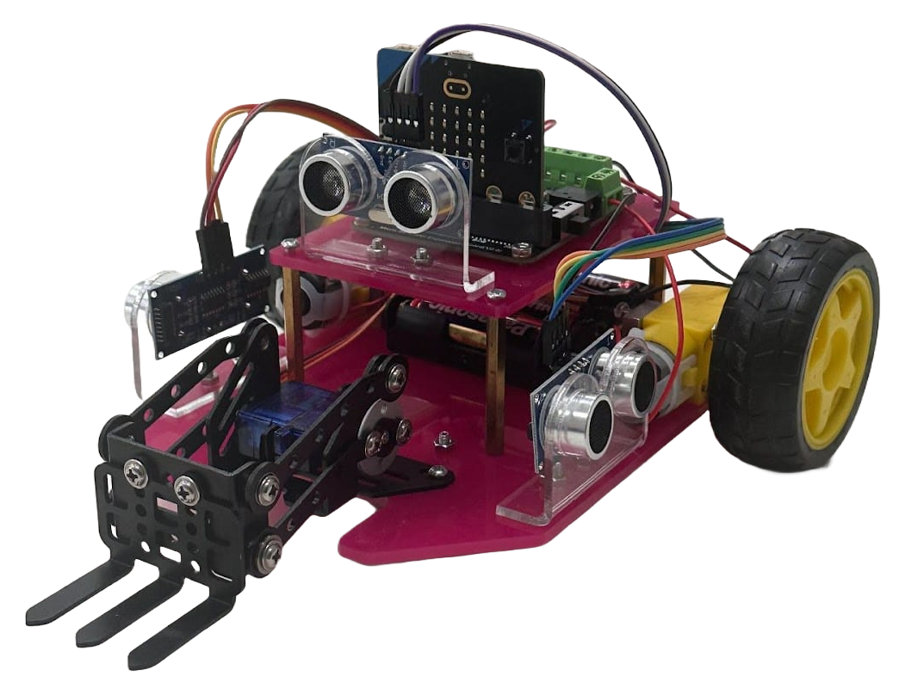
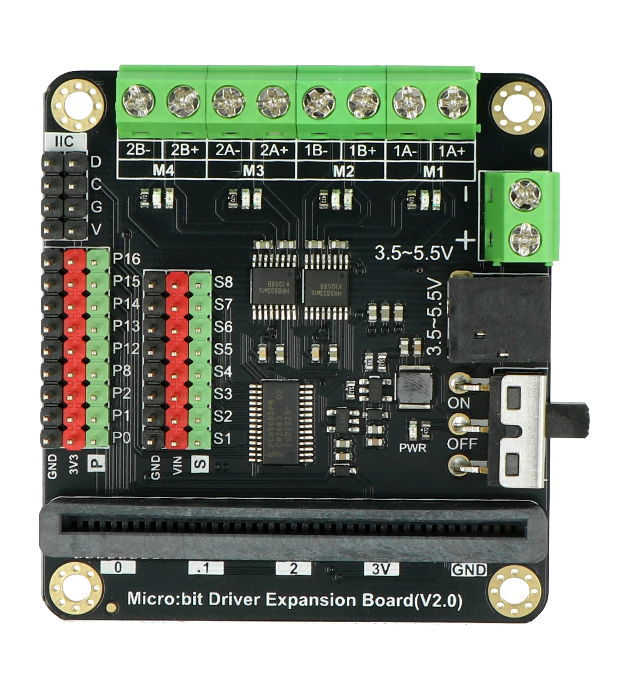

Setup guide and wiring instructions for the BLE Robot Controller.
This web application acts as a Bluetooth Low Energy (BLE) remote control for a BBC Microbit robot. It allows you to drive the robot using two different modes (WASD or L/R Tank) and manipulate up to 4 servo motors connected to the Microbit's expansion pins.
You will need an expansion board (like the DFRobot Motor Driver Board pictured below) to power the motors and servos, as the Microbit alone cannot provide enough current.
Connect your continuous rotation servos to the primary motor pins defined in the MakeCode project.
Connect standard 180° servos to these specific pins for the arm controls.
Switch between Driving Modes using the tabs on the controller interface.
The Microbit needs specific code to understand the Bluetooth signals sent by this website. You must flash the following MakeCode project to your device.
REQUIRED MAKECODE PROJECT
OPEN PROJECT IN MAKECODE →Click "Edit", then "Download" to flash to your Microbit.